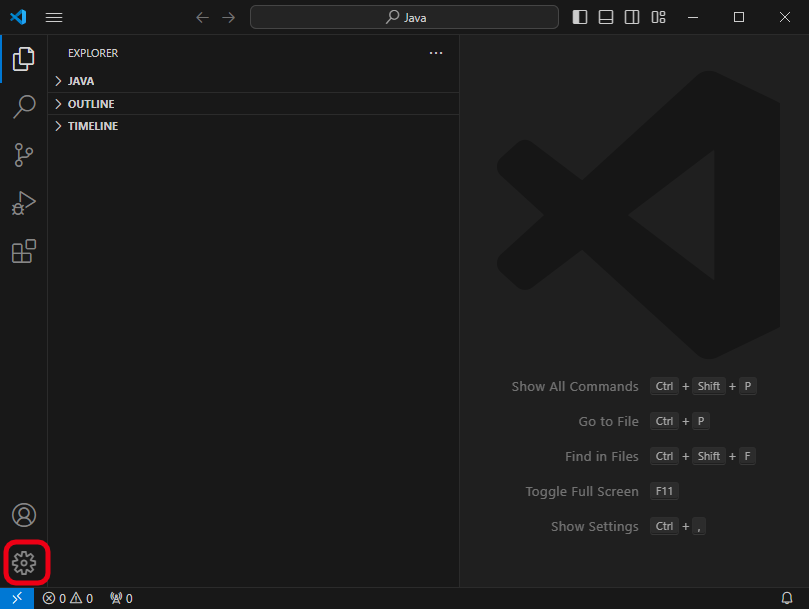
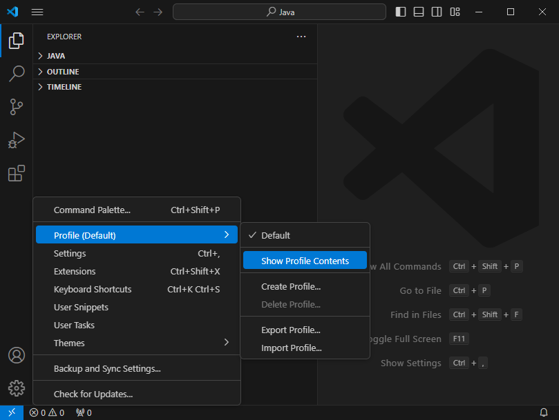
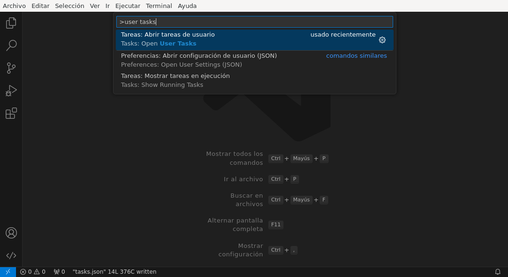
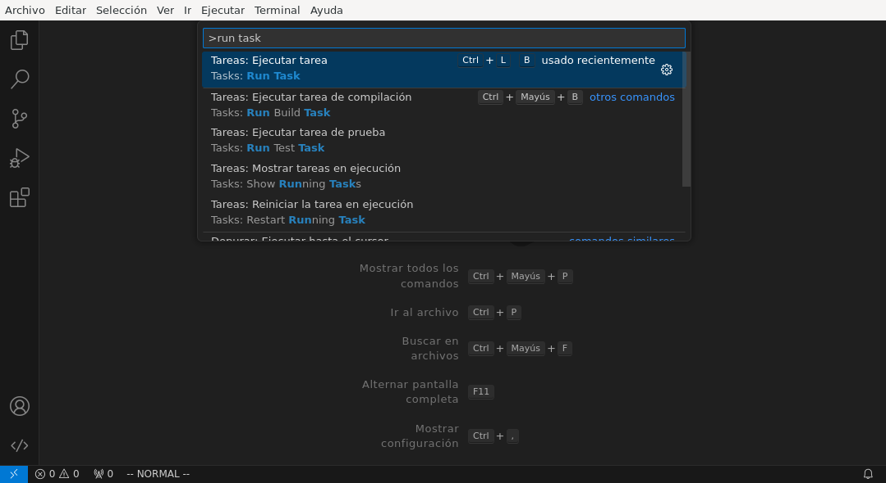
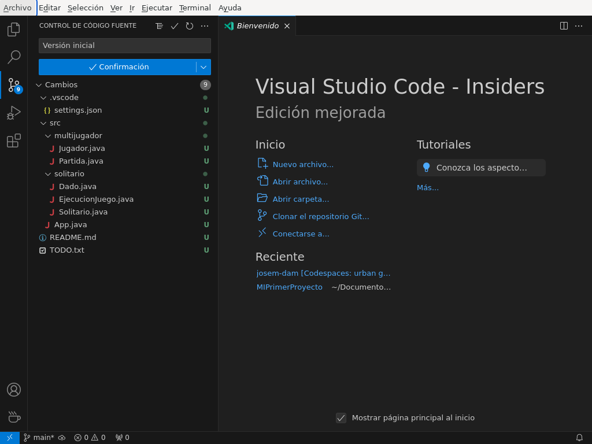

5. Visual Studio Code#
Nota
La mayor parte de las instrucciones generales para el IDE están fusiladas muy indisimuladamente del apéndice correspondiente de los apuntes para el módulo de Lenguajes de Marcas.
Como entorno de desarrollo para el seguimiento del módulo recomendamos Visual Studio Code, por varios motivos:
Es software libre (licencia MIT) y está dispoible para su descarga gratuita en su página web y su código fuente en su página de GitHub.
Está especialmente diseñado para la escritura de código y dispone de innumerables extensión que le dan soporte para muchos lenguajes de programación.
Tiene versiones en los principales sistemas operativos.
5.1. Generalidades#
- Idioma
Si la instalación trae el programa en inglés, puede instalarse el paquete de nuestra lengua pulsando Ctrl+Shift+P (o seleccionando
File>Preferences>Settings) y escribiendo la palabra «display» para reducir los términos de búsqueda:
Nota
El idioma es, en realidad, una extensión que se habilita al realizar esta operación.
- Áreas especiales
Podemos abrir algunas áreas especiales que nos permiten consultar o realizar ciertas actividades interesantes:
Ctrl+Shift+P, abre un pequeño cuadro que nos permite introducir instrucciones[1].
Ctrl+Shift+M, abre en la parte inferior una consola que muestra los errores derivados de una determinada acción. Por ejemplo, los errores de validación.
5.2. Personalización#
El entorno es muy, muy configurable y permite alterar su comportamiento mediante la manipulación de varios aspectos cuya descripción se almacena en archivos de configuración JavaScript Object Notation:
- Los parámetros de configuración propiamente dichos
(
settings.json).
Las extensiones (
extensions.json).Las tareas (
tasks.json).La depuración (
launch.json).Los atajos de teclado (
keybindings.json).
- Niveles de personalización
Además, estas personalizaciones podemos hacerlas a dos niveles:
- Perfiles
El nivel superior de configuración es el perfil, cada uno de los cuales se corresponde con un distinto perfil de desarrollador. Esto es debido a que, cuando programamos por ejemplo en Python, no necesitamos exactamente el mismo entorno de desarrollo que cuando programamos en Javascript. En consecuencia necesitaremos unas extensiones distintas, unas preferencias distintas, etc. Visual Studio Code nos permite lidiar con estas diferencias, permitiendo crear distintos perfiles, que escogeremos a voluntad dependiendo qué pretendamos desarrollar.
En principio, existe unicamente un perfil «Predeterminado» («Default», si usamos el original inglés), que se identifica porque aparece en la esquina inferior izquierda una ruedecita dentada como icono asociado a este perfil:
Pulsando sobre el icono podemos cambiar de perfil o crear uno nuevo:
Para crear tenemos dos estrategias:
Crear uno, o bien de cero o bien copiando otro ya existente. En este segundo caso, se nos permitirá elegir de forma grosera qué aspectos queremos excluir de la copia.
En caso de que queramos ser más específicos, al escoger los aspectos que queremos transladar de un perfil ya existente, podemos escoger «Mostrar los contenidos del perfil» y señalar aquello que queremos transferir al nuevo perfil. El resultado será un archivo
.profile, que puede importarse luego a fin de crear el nuevo perfil.
Al crear un nuevo perfil puede asociarse un icono identificativo, lo que nos ayuda a saber siempre de un vistazo qué perfil estamos utilizando.
Los archivos JavaScript Object Notation que caracterizan el perfil se almacenan bajo la ruta
$CONFIG/Code/User/profiles, donde$CONFIGes la localización en que el sistema operativo almacena las configuraciones de programas:En Linux,
$XDG_CONFIG(habitualmente,~/.config).En Windows,
%APPDATA%.
- Áreas de trabajo
El segundo nivel de personalización son el área de trabajo que podemos asimilarlas a los proyectos: para desarrollar un proyecto de Python debe abrirse el área de trabajo asociada al directorio en que se encuentra:
Las áreas de trabajo también se pueden personalizar, de modo que la personalización que disfrutemos al trabajar será la suma de la que hayamos hecho para el perfil que estamos usando más la que apliquemos al área de trabajo. De hecho, Visual Studio Code recuerda el perfil que se usó la última vez que se estuvo trabajando sobre un área de trabajo a fin de que, cuando abramos un área, se cambie automáticamente de perfil, si es necesario.
Los archivos JavaScript Object Notation de personalización del área de trabajo se almacenan dentro del subdirectorio
.vscode/incluido en la carpeta raíz del área de trabajo.Consejo
En principio, para generar un área de trabajo no es necesario más que abrir un directorio (vacío, en principio) y comenzar a trabajar sobre él. En la práctica, sin embargo, hacer un proyecto en un lenguaje de programación moderno implica en muchas ocasiones usar un gestor de proyectos (como Maven o Gradle si programamos en Java); lo cual exige una inicialización del directorio. Por ese motivo, es posible que la creación de un nuevo proyecto no se limite a crear un nuevo directorio y abrirlo como se ha ilustrado, sino a crear un proyecto gracias al uso de una extensión instalada.
Por hacer
Tratar las área de trabajo de múltiples directorios.
La estrategia, pues, para la personalización es tener distintos perfiles, uno para cada uno de los distintos tipos de desarrollo que pretendamos hacer; y, para cada proyecto concreto, definir un área de trabajo distinta, la cual podremos o no personalizar en un segundo nivel de concreción:
Ver también
Véanse más adelante los Preliminares.
- Configuración
Para modificar parámetros de configuración podemos pulsar Ctrl+,:
Este tipo de personalización puede hacerse tanto a nivel de perfil como de área de trabajo. Como alternativa, podemos directamente editar los
settings.jsoncorrespondientes. Para ello puede pulsarse sobre el icono remarcado arriba a la derecha.Por ejemplo, es común que utilicemos UTF-8 para la codificación de caracteres y, si usamos Windows, nos encontraremos con el inconveniente que la terminal de éste no utilice esta codificación. Para paliarlo podemos añadir:
{ "terminal.integrated.profiles.windows": { "PowerShell": { "source": "PowerShell", "icon": "terminal-powershell", "args": ["-NoExit", "-Command", "chcp 65001"] }, }, "terminal.integrated.defaultProfile.windows": "PowerShell" }
- Extensiones
Las extensiones permiten aumentar las funcionalidades de la aplicación y se instalan sólo a nivel de perfil. Ahora bien, su activación (o desactivación) sí puede hacerse a nivel de área de trabajo.
Una indispensable para quien se haya criado editando archivos en vim es VSCodeVim, que permite editar archivos como se hace en el veterano editor.
Para gestionar las extensiones, basta con pinchar sobre el icono lateral izquierdo señalado:
Dentro de las extensiones existe un tipo especial de ellas denominado paquete de extensiones (Extension Pack), que no es más que una extensión cuya instalación (o desinstalación) supone la instalación de varias extensiones conjuntas. Por ejemplo, Extension Pack for Java instala hasta seis extensiones que facilitan el trabajo con Java[2].
- Atajos de teclado
A nivel de perfil (y no de área de trabajo), el programa ofrece la posibilidad de asociar combinaciones de teclas a las distintas tareas definidas. Las asociaciones se puede hacer de distintos modos:
Pulsando Ctrl+Shift+P para abrir el diálogo que permite ejecutar tareas, pero en vez de ejecutarla pulsar sobre la ruedecilla dentada asociada:
Pulsando Ctrl+k-Ctrl+s para ver la lista de asociaciones a tareas y buscar en ella la tarea que nos interese.
Editar directamente el archivo
keybindings.jsondel perfil. Lo más cómodo, en vez de buscarlo en el sistema de archivos, es acceder a la lista de asociaciones que se acaba de citar, y pulsar aquí:El archivo contiene un array en que cada ítem es una de esas asociaciones. Más adelante se sugerirán algunos.
Ver también
La ayuda oficial del programa tiene una buena explicación sobre estos atajos.
- Tareas
El programa permite definir tareas de usuario tanto a nivel de perfil como a nivel de área de trabajo editando los respectivos
tasks.json. El segundo es fácil de editar (se debe crear bajo el subdirectorio.vscode), mientras que para lo primero lo más conveniente es pulsar Ctrl+Shift+P y buscar la orden Abrir tareas de usuario:Una vez abierto el archivo, deben definirse la tareas en formato JavaScript Object Notation. Por ejemplo, para abrir el archivo activo en el navegador Brave deberíamos definir una tarea así:
{ "version":"2.0.0", "tasks": [ { "label": "Abrir en Brave", "type": "shell", "command": "brave-browser", "windows": { "command": "C:\\Program Files\\Brave Software\\etc..." }, "args": [ "${file}" ], "presentation": {"reveal": "never"}, "problemMatcher": [] } ] }
La etiqueta (
label) nos sirve para identificar la tarea ycommandyargspara definir cuál es la aplicación externa que abriremos y con qué parámetros se ejecutará. Pueden también definirse campos específicos para sistemas específicos concretos como en el ejemplo se hace para dar soporte también a Windows.Ver también
Para ver cuáles son las variables que pueden usarse (como
${file}en el ejemplo), consúltese Variables Reference de la documentación oficial.Para ejecutar la tarea habrá que volver a abrir el cajetín para ejecutar ordenes y buscar Ejecutar tarea:
Aparecerá a continuación la lista de tareas definidas y podemos ejecutar la que deseemos. Una alternativa más cómoda es asociarle un atajo de teclado:
[ { "key": "ctrl+l b", "command": "workbench.action.tasks.runTask", "args": "Abrir en Brave" } ]
En este caso, se abrirá Brave al pulsar Ctrl+l-b.
Ver también
Para más información, consulte cómo crear tareas.
- Depuración
Visual Studio Code también está preparado para permitir la ejecución y depuración de código con las técnicas habituales de ejecución paso a paso, puntos de ruptura, puntos de ruptura condicionales, etc. Para ello es necesario dotarlo de soporte para la depuración del lenguaje de programación concreto en el que queramos hacer nuestros desarrollos. Esto se logra instalando las extensiones de depuración propias de cada lenguaje (Debugger for Java, Javascript Debugger, Python Debugger, etc).
De inicio, sin configuración adicional, podremos establecer puntos de ruptura, etc. usando el editor y podremos ejecutar sin atender ninguno pulsando Ctrl+F5, y ejecutar depurando pulsando F5.
También es posible la depuración abriendo la barra lateral para ello:
En esa barra puede escogerse, en caso de existir varias formas, cómo queremos lanzar el programa; y podrán vigilarse y manipularse los valores de las variables durante la depuración.
En principio, cuando se pulsan F5 o Ctrl+F5, el IDE intenta ejecutar el archivo activo[3]. Esto es un problema cuando escribimos un proyecto, que contiene múltiples archivos y cuando, además, necesitamos pasar parámetros al programa[4]. Por ese motivo, debe escribirse un archivo
.vscode/launch.jsonen el directorio de proyecto con un aspecto como este[5]:{ "version": "0.2.0", "configurations": [ { "type": "java", "name": "MiApp (help)", "request": "launch", "mainClass": "edu.acceso.miapp.Main", // ¿Qué clase es la principal? "args": ["--help"] // ¿Con qué argumento lanzamos el programa? }, { "type": "java", "name": "MiApp (terminal)", "request": "launch", "mainClass": "edu.acceso.miapp.Main", "args": ["--ui", "console"], }, { "type": "java", "name": "MiApp (terminal - assert)", "request": "launch", "mainClass": "edu.acceso.miapp.Main", "args": ["--ui", "console"], "vmArgs": ["-ea"] // Activa los asserts. } ] }
En este caso, hemos definido tres mecanismos de ejecución: uno que muestra ayuda, otro que ejecuta el programa utilizando un argumento y el último que hace lo mismo al anterior pero comprobando las aserciones.
Ver también
A la configuración básica citada, se le puede añadir otra adicional dentro de
.vscode/launch.json, cuyos principios pueden leerse en el artículo Working with VSCode launch configurations.Ver también
Para aprender a depurar lea el artículo Debugging de la página oficial.
5.3. Preliminares#
Antes de empezar cualquier configuración específica a un lenguaje determinado es conveniente preparar en el perfil Predeterminado todo aquellas configuraciones que deseemos que sean universales independientemente de la herramienta que utilicemos. En particular, nos puede interesar:
Si trabajamos en Windows y creamos aplicaciones que utilizan como interfaz de usuario la consola, configurar la codificación de ésta para que sea UTF-8.
Los aspectos relacionados con el editor (tamaño de la fuente, emulación de vim).
La instalación de extensiones que consideremos útiles para todos o gran parte de los perfiles (p.e. alguna relativa a Github). En caso de que alguna no sea útil para todos, podemos tenerla deshabilitada para perfiles específicos.
5.4. Integración con Git#
Un aspecto fundamental del desarrollo de aplicaciones es tener un adecuado control de versiones. Si decidimos usar Git, Visual Studio Code nos proporcionará una excelente integración.
5.4.1. Requisitos#
Previamente, sin embargo, necesitaremos:
5.4.2. Inicialización#
Cumplido eso podemos partir de dos comienzos distintos para convertir el espacio de trabajo en un repositorio de Git también:
Definir el control de versiones en un espacio de trabajo que antes careciera de él.
Clonar un repositorio ya existente para constituir con su contenido un espacio de trabajo.
Para lo primero basta abrir un área de trabajo y, ya con el área abierta, pinchar sobre el icono de «bifurcación de ruta» que se puede ver a la izquierda:
Hecho esto, si el espacio de trabajo carecía de control de versiones, nos dará la posibilidad de iniciarlo[6] y crear un commit inicial (el campo nos permite indicar con qué mensaje queremos identificarlo):
Prudencia
El commit necesita realizarse bajo una identidad. Si no hay
definida ninguna en el archivo de configuración de Git
(~/.gitconfig en Linux o %USERPROFILE%\.gitconfig en
Windows) la acción no se llevará a cabo, así que tendremos que realizarla
antes:
[user]
name = "Perico de los Palotes"
email = "perico@example.com"
Si, además, queremos sincronizar con un repositorio de Github, deberemos volver a pinchar sobre el icono de «bifurcación de ruta» y escoger Publicar la rama:
En este caso, deberemos validarnos con nuestra cuenta (en caso de que no lo hubiéramos hecho antes) y escoger el nombre para el nuevo repositorio:
Prudencia
El programa atiende a lo que se haya indicado en la configuración
de git (Linux la almacena en ~/.gitconfig), si es que el usuario ya
ha usado y configurado anteriormente git fuera de Visual
Studio Code. Si deseáramos que fuera el propio programa el que se encargara
de la autenticación de modo independiente distinto** podríamos hacer lo
siguiente:
- Llevar a cabo todos los desarrollos con este programa bajo un mismo
directorio (pongamos que
~/Programacion/VSCode).
Utilizar la configuración condicional para modificar qué usuario realiza cambios y de qué forma se gestionan las credenciales. Así en
~/.gitconfigpodemos escribir:[user] name = Yo cuando uso Git email = cuenta1@example.com [credential] # Supongamos que usamos OAuth helper = "cache --timeout=7200" helper = oauth [includeIf "gitdir:~/Documentos/VSCode/"] path = ~/Documentos/VSCode/.gitconfig
Y en
~/Documentos/VSCode/.gitconfig:[credential] # helper es acomulativo y dejarlo en blanco, # borra las configuraciones anteriores. # Por tanto, Visual Studio Code se encarga de la autenticación. helper = [user] name = Yo cuando uso vscode email = cuenta2@example.com
El problema de obrar así es que no tendremos definido ningún sistema de autenticación fuera de Visual Studio Code para los proyectos que hayamos desarrollado con él. Por tanto, no podremos sincronizar con GitHub desde la consola de texto, aunque sí desde la consola integrada en el propio IDE.
Ver también
Para más información consulte este gist que trata este aspecto.
La otra opción para comenzar es clonar un repositorio para lo cual no tenemos más que declarar nuestro propósito y especificar cuál es la dirección del repositorio:
En este caso, podemos escribir directamente la dirección del repositorio (como se observa en la captura) o pinchar sobre «Clonar desde GitHub» para identificarnos con un usuario. En este segundo caso (o si ya hubiéramos estado identificados previamente), se sustituirá esa leyenda por la lista de repositorios del usuario y podremos elegirlos directamente.
5.4.3. Sincronización#
Una vez que tengamos asociado el directorio local con un repositorio remoto, el programa será capaz de marcarnos qué archivos hemos cambiado respecto a la versión del último commit, nos lo mostrará en el propio editor e incluso podremos consultar en qué consiste ese cambio y revocarlo:
Con el soporte nativo para Git de Visual Studio Code sólo podremos hacer comparaciones entre la última versión moficiada y la última confirmada (commit). Sin embargo, si instalamos la extensión Gitlens podremos hacer estas comparaciones con todas las versiones anteriores:
Otra circunstancia con la que nos podemos encontrar es que un área de trabajo que ya tenemos asociada a un repositorio remoto, quede desfasada y queramos, antes de comenzar a programar, sincronizarla para que quede en el estado más avanzado del repositorio. Para ello, simplemente, podemos hacer un «pull» tal como haríamos manualmente con git:
Existe, no obstante, la posibilidad de ejecutar periódicamente un git
fetch si configuramos:
{
"git.autofetch": true,
"git.autofetchPeriod": 1800000
}
en que la segunda opción indica la frecuencia con la que se hace la comprobación (500 horas, o sea, nunca). Esto provoca que al abrir el programa se compruebe si ha habido algún cambio en el respositorio desde la última vez que accedimos al área de trabajo y ya no se vuelva a realizar otra comprobación mientras estamos trabajando[7]:
Nota
La captura muestra directamente lo que se ve en la barra lateral izquierda cuando pulsamos el icono de Git (bifurcación de ruta). Sin embargo, antes de pulsar, podemos conocer que existen cambios en el repositorio remoto, porque en la barra de estado de la parte inferior se verá que hay cambios pendientes (en este caso, 1 de bajada y ninguno de subida).
5.4.4. Ramas#
El soporte nativo también nos permite tratar con ramas, cambiar entre ellas y mezclarlas de forma bastante intuitiva. En la parte izquierda de la barra inferior de estado podemos ver en qué rama estamos trabajando y, si pulsamos sobre ella, se nos abrirá un cuadro para escoger otra rama entre las existentes o crear una nueva:
Para otras operaciones, como mezclar ramas, habría que acudir al menú de la sección de control de versiones:
5.5. Java#
Obviamente, para programar en Java, sea con Visual Studio Code o con cualquier otro IDE, debemos tener instalado JDK (o sea, el paquete de desarrollo para Java). Lo más juicioso en este caso es usar la versión desarrollada por OpenJDK, que publica para distintas plataformas y sistemas operativos. En los sistemas Linux sus versiones son las versiones de referencia[8], así que podremos instalarla mediante el sistema de paquetería; mientras que en Windows podemos utilizar los instalables que nos ofrece Adoptium.
5.5.1. Configuración previa#
Facilita la gestión de proyectos de Java, permitiendo directamente la creación de un proyecto, que es un área de trabajo con una estructura básica ya definida y una configuración básica. |
|
Permite depurar los programas de Java (puntos de ruptura, ejecución condicional, ejecución paso a paso, etc). |
|
Proporciona sugerencias basadas en IA. |
|
Si usamos Maven como gestor de proyecto incorpora utilizades interesantes. |
|
Permite ejecutar casos de prueba. |
Además de estas extensiones, puede interesarnos añadir configuración adicional:
{
"files.exclude": {
"target/": true, // No ver compilaciones si usamos Maven.
},
// Evita los inlay hints para los parámetros de las funciones.
"editor.inlayHints.enabled": "off"
}
Además, durante la codificación puede interesarnos hacer alguna prueba individual de cómo funciona método a través de la consola interactiva JShell. Podemos, por supuesto, abrir una terminal (Ctrl+`) y escribir directamente la orden en ella, pero sin duda es más cómodo crear una tarea y asociarla a una combinación de teclas. La tarea podemos definirla con este código JavaScript Object Notation:
{
"label": "Shell para Java",
"type": "shell",
"command": "jshell",
"windows": {
// Adoption al instalar Java no define la variable JAVA_HOME,
// sino quue añade la localización del programa al PATH. De lo
// contrario habría que hacer algo así:
// "command": "${env:JAVA_HOME}\\bin\\jshell.exe"
},
"args": [], // Sin argumentos.
"presentation": {
"reveal": "always",
"panel": "new"
},
"problemMatcher": []
}
y la asociación a la combinación Ctrl+Shift+J de este modo:
{
"key": "ctrl+shift+j",
"command": "workbench.action.tasks.runTask",
"args": "Shell para Java"
}
5.5.2. Creación del proyecto#
Para comenzar un proyecto, en vez de abrir directamente un área de trabajo, lo mejor es crear un nuevo proyecto a través de la extensión Project Manager for Java, lo que definirá directamente en la nueva área de trabajo una estructura de directorios apropiada para el gestor de proyectos que seleccionemos. En el caso de Maven, la que se expone a continuación. A esta estructura, podemos añadir a mano según nuestras necesidades:
Archivos de licencia (
LICENCE) e información (README.mdoREADME.rst, según prefiramos).Un subdirectorio
.vscode/para configuración relacionada con Visual Studio Code y que puede incluir:settings.json,que contiene la configuración adicional del área de trabajo.
launch.json,en que incluiremos información relativa a la ejecución y la depuración del código.
Un archivo
.gitignorepara evitar que Git vigile algunas partes del directorio de proyecto (por ejemplo, allí donde se guardan las clases compiladas).Un subdirectorio
.github/con configuración relativa a a la sincronización del repositorio con GitHub.
5.5.3. Maven#
Como gestor del proyecto, podemos de decantarnos por Maven. Para ello, necesitaremos haber instalado la extensión Maven for Java.
Al escoger la creación de un proyecto con Maven se nos pedirá escoger un groupID y un artifactID (véanse las explicaciones al respecto en la página del propio software). El proyecto tendrá esta estructura:
+- .github/ (... contenido relativo a la sincronización ...)
+- .vscode/
| +-- launch.json
| +-- settings.json
+- src/
| +-- main/java
| | +-- java
| | | +-- /edu/accesodatos/miapp
| | | +-- Main.java
| | | +-- ... (archivos del proyecto)
| | +-- resources/
| +-- test/ (pruebas de software)
+- target/ (aquí dentro se guardan los .class)
+- .gitignore
+- LICENSE
+- pom.xml (configuración de Maven)
+- README.md
donde las línea enfatizadas son las que generará el plugin, mientras que lo demás es probable que lo vayamos creando nosotros según nuestras necesidades.
La creación de proyecto, define archivo pom.xml que podemos
revisar. Inicialmente puede interesarnos añadir:
<version>1.0.0</version> <!-- Podemos modificar el valor -->
<name>MiPrimeraAplicacion</name> <!-- Podemos añadir esto -->
<developers>
<developer>
<id>perico-midnick</id>
<name>Perico de los Palotes</name>
<email>perico.palotes@gmail.com</email>
</developer>
</developers>
Truco
Si al crear el proyecto, se acostumbra a no usar ningún arquetipo; el IDE no preguntará si se quiere abrir el directorio de proyecto, sino el directorio padre; lo cual es un engorro. Así que es mejor, configurar el plugin a nivel de perfil para que ni siquiera haga la pregunta.
Ya hemos indicado que una de las ventajas de usar Maven es no tener que
rompernos la cabeza con las dependencias del proyecto; y añadir al
pom.xml el repositorio de Maven
apropiado. La tarea, además, se puede simplificar mucho si la búsqueda del
paquete necesario la realizamos dentro del propio Visual Studio Code con la
extensión Maven for Java:
Ver también
Para más información, consulte las explicaciones de Maven al respecto.
5.5.4. Ejecución#
Ya hemos dicho que para ejecutar la aplicación podemos pulsar Ctrl+
F5 (si no queremos atender a los puntos de ruptura que hayamos definido)
o, simplemente, F5 si sí queremos hacerlo y depurar el programa paso a
paso. Además, podemos instruir al IDE de cómo ejecutar el programa dándole
instrucciones en .vscode/launch.json. A todo lo ya dicho es conveniente
añadir algunas notas:
- Argumentos
Si se quiere dejar que el programador escriba a mano en cada ejecución los argumentos puede usarse:
"args": "${command:SpecifyProgramArgs}"
Y si se quiere que haya algumnos argumentos predeterminados y otros escritos a mano:
"args": ["--ui", "cli", "${command:SpecifyProgramArgs}"]
También se pueden definir valores en
settings.xmly usarlos como argumentos:// En settings.xml { // ... "miapp.args": { "ui": "cli", "format": "json" } }
Que podremos usar como:
// En launch.json "args": [ "--ui": "${config:miapp.args.ui}", "--format": "${config:miapp.args.format}" ]
Otra posibilidad es definir un conjunto discreto de valores, y posibilitar que se elija de la lista al ejecutar:
{ "version": "0.2.0", "inputs": [ { "id": "interface", "type": "pickString", "options": ["auto", "cli", "gui"], "description": "Seleccione la interfaz de usuario" } ], "configurations": [ { "type": "java", "name": "MiApp (help)", "request": "launch", "mainClass": "${java:mainClass}", // ¿Qué clase es la principal? "args": ["--uid", "${input:interface}"] } ] }
- Clase principal
Al indicar cómo ejecutar un programa, debe indicarse cuál es la clase principal de ejecución:
"mainClass": "edu.acceso.miapp.Main"
Una alternativa es definir una propiedad en
settings.json:{ "app.package": "edu.acceso.miapp" }
y usarla luego en
launch.json"mainClass": "${config:app.package}.Main"
5.5.5. Otros aspectos#
Aún hay otros aspectos en los que conviene reparar.
Versión de Java
El pom.xml que se genera automáticamente tiene definidas estas
propiedades:
<properties>
<maven.compiler.source>17</maven.compiler.source>
<maven.compiler.target>17</maven.compiler.target>
</properties>
que define qué sintaxis comprobará el analizador sintáctico (source) y para
qué versión de Java se generará el bytecode (target). Pero a partir de
Java 9 (y posiblemente queramos compilar para versiones posteriores) el
compilador javac introdujo la opción --release en sustitución de
las dos antedichas (que siguen funcionando por otra parte). Por ese motivo es
conveniente reescribir así:
<properties>
<maven.compiler.release>21</maven.compiler.release>
</properties>
<build>
<plugins>
<plugin>
<groupId>org.apache.maven.plugins</groupId>
<artifactId>maven-compiler-plugin</artifactId>
<configuration>
<release>${maven.compiler.release}</release>
</configuration>
</plugin>
</plugins>
</build>
Documentación para desarrolladores
El estándar para crear la documentación de la API de un programa escrito en Java es Javadoc. No forma parte del propósito de esta guía redactar una guía sobre cómo escribir los comentarios en el código para generar la documentación con esta herramienta, pero sí indicar cómo posibilitar su ejecución.
En un proyecto gestionado con Maven será necesario añadir el plugin
maven-javadoc-plugin
a pom.xml:
<build>
<plugins>
<plugin>
<groupId>org.apache.maven.plugins</groupId>
<artifactId>maven-javadoc-plugin</artifactId>
<!-- La última versión puede consultarse en el repositorio de Maven -->
<version>3.11.2</version>
<configuration>
<source>${maven.compiler.source}</source> <!-- o ${maven.compiler.release} -->
<show>private</show> <!-- Muestra también atributos privados -->
</configuration>
</plugin>
</plugins>
</build>
Lo cual creará la documentación dentro de target/reports/apidocs/ con
que sólo ejecutemos:
$ mvn javadoc:javadoc
El problema de esto es que una vez generada la documentación es probable que al
cambiar comentarios e intentar regenerar la documentación, ésta no cambie; y nos veamos
forzados a limpiar primero. Para ello mvn trae el subcomando
clean, que implica borrar absolutamente todo, incluidas las clases ya
compiladas. Por ese motivo, es conveniente crear un perfil que borre únicamente
la documentación y no el resto del contenido generado por mvn. De
nuevo, tendremos que añadir a pom.xml:
<profiles>
<profile>
<id>clean-javadoc-only</id>
<build>
<plugins>
<plugin>
<artifactId>maven-clean-plugin</artifactId>
<configuration>
<excludeDefaultDirectories>true</excludeDefaultDirectories>
<filesets>
<fileset>
<directory>${project.build.directory}/reports/apidocs</directory>
</fileset>
</filesets>
</configuration>
</plugin>
</plugins>
</build>
</profile>
</profiles>
De este modo, podremos generar la documentación siempre así:
$ mvn clean:clean javadoc:javadoc -Pclean-javadoc-only
Consejo
Si creamos una tarea y le asociamos una combinación de teclas, tal como hicimos con jshell. todo será muy cómodo.
Nota
El directorio en que se genera la documentación puede cambiarse, si se desea:
<configuration>
<source>${maven.compiler.source}</source>
<show>private</show>
<outputDirectory>${project.basedir}/docs</outputDirectory>
</configuration>
Ver también
Para saber cómo generar y publicar automáticamente la documentación al sincronizar con el repositorio de GitHub, consulte este gist.
Empaquetamiento de la aplicación
Otro aspecto interesante es el empaquetamiento del proyecto en un archivo JAR:
Cuando es una librería, es probable que nos interese empaquetarla sin dependencias.
Cuando es una aplicación para usuario final, muy probablemente queramos un paquete autosuficiente que contenga todas las dependencias.
Visual Studio Code permite empaquetar la aplicación pinchando el icono remarcado:
o, simplemente, escribir la orden (Ctrl+Shift+P) «Export Jar». En ambos casos, se pedirá el archivo que contiene la clase principal y las dependencias que queremos incluir. El .jar quedará guardado en el directorio de proyecto y ya podremos ejecutar la aplicación con:
$ java -jar nombreProyecto.jar
Si, por el contrario, queremos generar manualmente un paquete, podemos ejecutar:
$ mvn package
$ mvn clean package # Si queremos borrar antes la compilación y que se regenere
Pero esto no es suficiente, también deberemos tocar pom.xml según sea
nuestro propósito.
- Librería
En este caso, nos interesará no incluir las dependencias:
<plugin> <groupId>org.apache.maven.plugins</groupId> <artifactId>maven-jar-plugin</artifactId> <version>3.4.2</version> <!-- La última versión --> <configuration> <finalName>package</finalName> </configuration> </plugin>
El resultado es el archivo
target/package.jar. Si no definimos el elemento<finalName>, tiene como valor predeterminado${project.artifactId}-{project.version}.- Aplicación final
En este caso nos interesa incluir todas las dependencias y tendremos que configurar de distinta forma:
<!-- ... --> <properties> <main.class>edu.acceso.miapp.Main</main.class> <!-- Otras propiedades --> </properties> <!-- ... ---> <build> <plugins> <plugin> <groupId>org.apache.maven.plugins</groupId> <artifactId>maven-shade-plugin</artifactId> <version>3.6.0</version> <configuration> <createDependencyReducedPom>false</createDependencyReducedPom> <outputFile>target/package.jar</outputFile> <minimizeJar>true</minimizeJar> <transformers> <transformer implementation="org.apache.maven.plugins.shade.resource.ManifestResourceTransformer"> <mainClass>${main.class}</mainClass> </transformer> </transformers> </configuration> <executions> <execution> <phase>package</phase> <goals> <goal>shade</goal> </goals> </execution> </executions> </plugin> </plugins> </build>
que generará el paquete con idéntico nombre. El predeterminado habría sido el mismo que en el caso anterior.
Ver también
Si quiere generar un paquete automácamente al crear una release en GitHub, eche un ojo a este gist al respecto.
Notas al pie